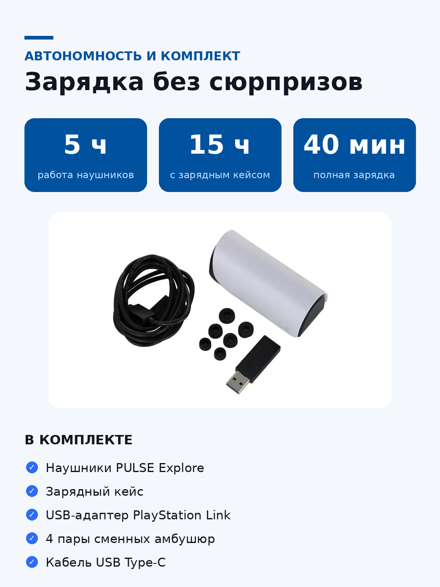

Геймпад Sony DualSense


ДЛЯ МАРКЕТПЛЕЙСОВ
Заголовок ВБ: Геймпад Sony DualSense беспроводной для PlayStation 5, белый, оригинал
Заголовок Озон: Геймпад Sony DualSense для PlayStation 5 / PC — адаптивные триггеры, белый
Описание: Оригинальный беспроводной геймпад Sony DualSense для PlayStation 5. Адаптивные триггеры с изменяемым сопротивлением, тактильный отклик на каждое действие, встроенные микрофон и динамик, зарядка USB-C. Новинка в упаковке.
SEO-ключи: dualsense, геймпад ps5, дуалсенс, джойстик плейстейшен 5, геймпад sony оригинал
Наушники Sony PULSE Explore




ДЛЯ МАРКЕТПЛЕЙСОВ
Заголовок ВБ: Наушники Sony PULSE Explore беспроводные для PlayStation 5 и ПК, белый
Заголовок Озон: Наушники Sony PULSE Explore — Lossless-звук, для PS5, ПК и мобильных
Описание: Беспроводные наушники Sony PULSE Explore с технологией PlayLink: lossless-звук без задержек на PS5, ПК и мобильных. Планшетный динамик, шумоизоляция, компактный дизайн для дома и в дорогу.
SEO-ключи: pulse explore, наушники ps5, игровые наушники с микрофоном, беспроводные наушники sony
Игровая консоль Sony PlayStation 5 Pro


ДЛЯ МАРКЕТПЛЕЙСОВ
Заголовок ВБ: Игровая консоль Sony PlayStation 5 Pro Digital, 2 ТБ SSD, белый
Заголовок Озон: PlayStation 5 Pro Digital 2 ТБ — PSSR, 4K 120 Гц, Wi-Fi 7
Описание: Sony PlayStation 5 Pro Digital Edition: 2 ТБ SSD, технология PSSR с ИИ-апскейлом, поддержка 4K 120 Гц и 8K, Wi-Fi 7. Всё в коробке: консоль, геймпад DualSense, кабели и документация.
SEO-ключи: пс5 про, плейстейшен 5 про, консоль sony, ps5 pro, игровая приставка sony
Массажер для ног Fujimo IN·YANG F158


ДЛЯ МАРКЕТПЛЕЙСОВ
Заголовок ВБ: Массажер для ног Fujimo IN·YANG F158, стопы и икры, роликовый и компрессионный
Заголовок Озон: Массажер для ног Fujimo IN·YANG F158 2-в-1 — ролики, компрессия 360°, подогрев, 65 Вт
Описание: Массажёр для ног Fujimo IN·YANG F158: 2 в 1 — роликовый массаж стоп и компрессионное обёртывание 360° для икр. Подогрев в 2 зонах, мощность 65 Вт. Снимает усталость после рабочего дня, тренажёра и долгой ходьбы.
SEO-ключи: массажер для ног, массажер стоп и икр, компрессионный массажер, массажер для дома
Коньячный набор из Златоуста


ДЛЯ МАРКЕТПЛЕЙСОВ
Заголовок ВБ: Коньячный набор: штоф и 3 бокала с фианитами, Златоуст, ручная работа
Заголовок Озон: Коньячный набор из Златоуста — штоф и 3 бокала с фианитами, чешское стекло, гравировка
Описание: Коньячный набор ручной работы из Златоуста: штоф и три бокала с фианитами. Чешское стекло, ручная гравюра и золочение мастеров Златоуста, гравировка по запросу (до 64 символов). Подарочная упаковка — готов к вручению.
SEO-ключи: коньячный набор, штоф и бокалы, подарок мужчине ручная работа, набор для коньяка златоуст